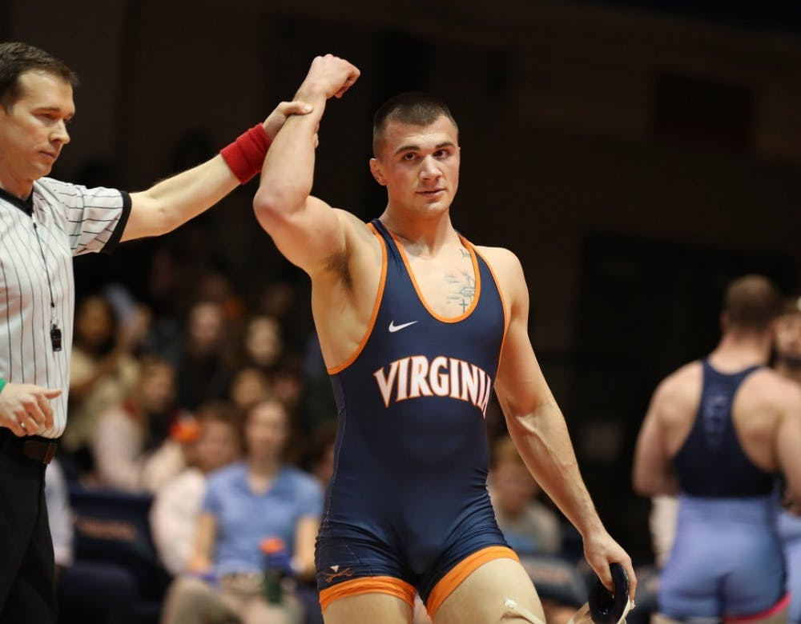

By Chad Whych | 04/23/2020

After a grueling season filled with numerous highs and lows, the Cavaliers are still seeking glory. It has been exactly one month since the NCAA decided to cancel collegiate wrestling’s national championship and all other championships for both spring and winter sports due to the COVID-19 outbreak. Along with this, Virginia Athletics suspended all athletic activities until further notice. Yet neither of these obstacles are stopping two Virginia star wrestlers in junior Jay Aiello and senior Jack Mueller.
The abrupt end to the season couldn’t have come at a worse time for Virginia, as the Cavaliers were picking up quite a bit of momentum. At the ACC tournament they finished higher as a team than rival and top-ten program Virginia Tech and closed out their season ranked 24 by Intermat.
Aiello was one of the reasons for the Cavaliers’ ACC success, as he concluded the season with an ACC championship and a top-five national ranking. Despite losing out on a shot for a national championship, Aiello was more fixated on his senior teammate.
“I felt for [Mueller] a lot, because with this being his senior year it was his last shot at a title,” Aiello said.
Nevertheless, the pair were offered some consolation, as they were recognized as first team All-Americans by the National College Wrestling Association April 17. Beyond in-season accomplishments, the two — who are also roommates — have been able to find ways to maintain and improve their fitness by developing a lockdown workout regimen, while also relaxing after a fatiguing season.
“Running, lifting and dieting are the most important things we can do right now,” Aiello said when asked about how the two now maintain weight and work out in their current situation. “Jack and I can both attest to this, it is nice to get some time away from the mat to let both your body and mind rest.”.
This rest is something that Mueller is extremely thankful for. Following the disappointment of not being able to contend for a national championship, the Dallas native has his eyes set on the recently postponed 2020 Tokyo Olympic Games.
“I now get to move past all the mental fatigue of the season, move to New York, focus on freestyle wrestling and totally reset my gauge,” Mueller said. “So, I think this break will help a lot.”
Mueller has truly set the bar high for Virginia wrestling, and the team now seeks to continue his legacy. In fact, Mueller is the sole graduating senior starter for the Cavaliers, as Virginia has a young team eager to reach the upper echelon of college wrestling.
When asked which young wrestlers could make the biggest splash when stepping into the lineup next year, the two agreed that Virginia’s lightweight portion of the roster is the most promising.
“We have a few good light guys coming into the mix,” Aiello said.
Mueller and Aiello both specifically pointed towards freshmen Patrick McCormick, Justin McCoy and James Whitaker. All three took different paths last season but reached success in their own accord.
McCormick served as Mueller’s backup last season. “He sacrificed a lot being my partner throughout my run,” Mueller said — and now McCormick looks to build off these sacrifices. McCormick completed last season as the national collegiate open champion at 125 lbs., which serves as a fantastic start for the Cavalier wrestler with the largest shoes to fill.
In fact, McCoy was the lone freshman on the team to reach the NCAA tournament after placing fourth at the ACC tournament at 157 lbs.
“Speaking from my own experience, I know that once you get that first year in the lineup out of the way it gives you a ton of confidence,” Aiello said when asked about the freshman’s contributions to the team. Now with his first-year nerves out of the way, McCoy seeks to continue his early dominance.
Lastly, Whitaker’s path was much different from his standout freshmen counterparts. Whitaker’s victory came in that he got to recover from sustained injuries. According to FloWrestling, Whitaker was the No. 20 overall recruit for the class of 2019. With a full recovery he looks to fulfill the potential that Mueller and Aiello see in him.
With all of these young wrestlers receiving a larger role in the lineup, Virginia will continue to improve. However, given the economic impact of COVID-19, the state of the wrestling world seems to be at risk. After in-state rival Old Dominion recently shut down its wrestling program, one can only wonder what the future for the collegiate sport holds.
“I am very scared for the sport of college wrestling, in terms of if college football gets canceled,” Mueller said. “Money has to come from somewhere, and it seems like wrestling is always the first sport to get cut.”
Despite these trying times in the wrestling community and the world as a whole, Mueller and Aiello are both confident in the Virginia wrestling family.
“The wrestling community is strong, and if one part of the community goes down, we have their back, we will not go down without a fight,” Mueller said.
Now more than ever wrestling programs in Virginia, and the wrestling world as a whole, need to stick together given the uncertain financial state many collegiate athletics programs find themselves in.
Notwithstanding this danger, the Cavaliers’ future looks bright as they are a young team filled with talent — even with the loss of one of their most accomplished wrestlers in Jack Mueller. In fact, come November, the Cavaliers are sure to have a deep starting lineup that can compete with some of wrestling’s best.